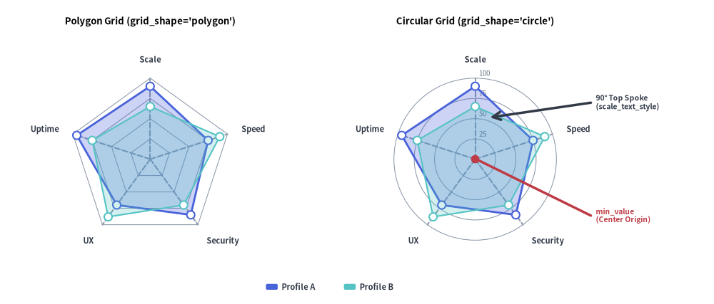
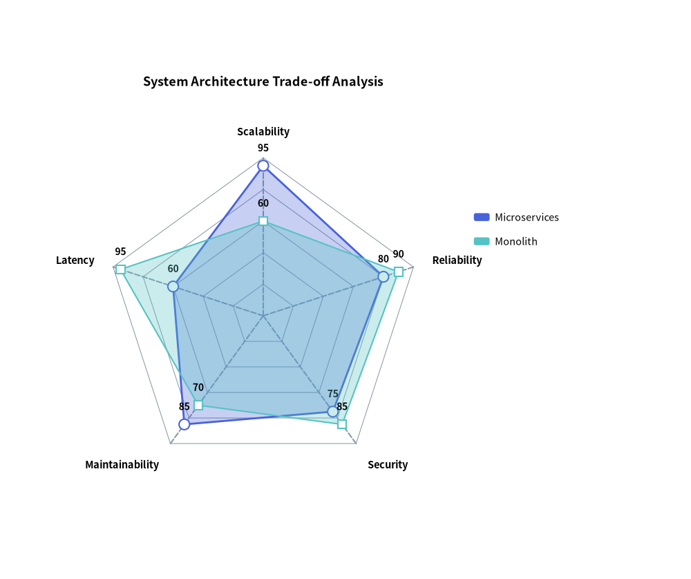
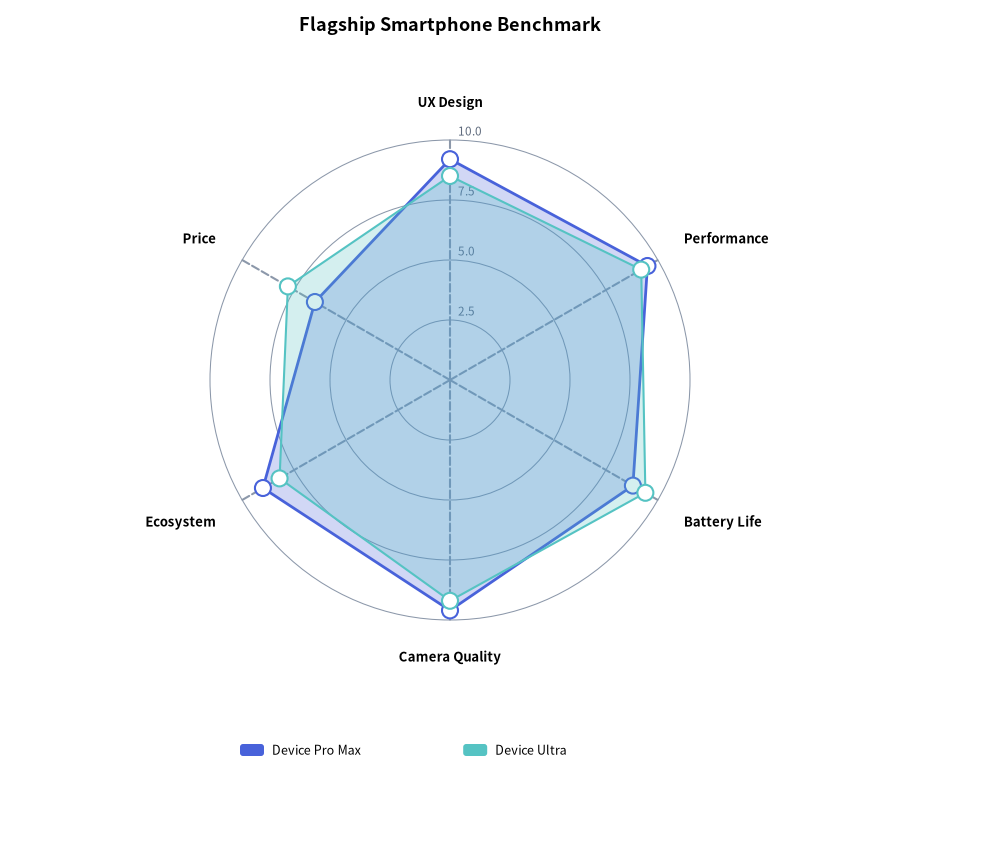

RadarChart: Multivariate Radial Metrics & Spider Webs
RadarChart (drawlib.charts.radar, also known as a spider web or star chart) evaluates multivariate entities across three or more symmetric radial dimensions emanating from a common center origin point. It is widely used for skill matrices, competitive benchmark profiles, and system architectural trade-off evaluations.
1. Overview & Radial Geometry

Source Code
from drawlib.canvas import save, setup
from drawlib.charts.radar import RadarChart
from drawlib.lines import line
from drawlib.shapes import circle
from drawlib.styles import Styles
from drawlib.text import text
setup(width=132, height=62)
dims = ["Scale", "Speed", "Security", "UX", "Uptime"]
vals_a = [90, 75, 85, 70, 95]
vals_b = [65, 90, 70, 88, 75]
# Left: Polygon Grid
poly_radar = RadarChart(
categories=dims,
axis_line_style=Styles.MutedDashed,
axis_text_style=Styles.DarkBold.patch(text_size=10.0),
grid_style=Styles.MutedThin,
radius=16.5,
min_value=0.0,
max_value=100.0,
levels=4,
grid_shape="polygon",
title="Polygon Grid (grid_shape='polygon')",
title_style=Styles.BlackBold.patch(text_size=11.0),
)
poly_radar.add_series("Profile A", vals_a, style=Styles.PrimaryFlat, fill_alpha=0.28)
poly_radar.add_series("Profile B", vals_b, style=Styles.SecondaryNeutral, fill_alpha=0.25, line_style="dashed")
poly_radar.draw(xy=(4.0, 5.0))
# Right: Circular Grid with Scale Labels
circ_radar = RadarChart(
categories=dims,
axis_line_style=Styles.MutedDashed,
axis_text_style=Styles.DarkBold.patch(text_size=10.0),
grid_style=Styles.MutedThin,
scale_text_style=Styles.Muted.patch(text_size=10.0),
scale_format="{:.0f}",
radius=16.5,
min_value=0.0,
max_value=100.0,
levels=4,
grid_shape="circle",
title="Circular Grid (grid_shape='circle')",
title_style=Styles.BlackBold.patch(text_size=11.0),
)
circ_radar.add_series("Profile A", vals_a, style=Styles.PrimaryFlat, fill_alpha=0.28)
circ_radar.add_series("Profile B", vals_b, style=Styles.SecondaryNeutral, fill_alpha=0.25, line_style="dashed")
circ_radar.draw(xy=(58.0, 5.0))
# Callout annotations on Right RadarChart using exact center coordinates
rw, rh = circ_radar.get_size()
rcx = 58.0 + rw / 2.0
rcy = 5.0 + (rh - 6.0) / 2.0
circle((rcx, rcy), radius=0.85, style=Styles.DangerFlat)
line((rcx + 0.8, rcy - 0.3), (105.0, 18.0), style=Styles.DangerBold)
text((106.0, 18.0), "min_value\n(Center Origin)", style=Styles.DangerBold.patch(text_size=10.0, halign="left"))
line((rcx + 3.0, rcy + 8.5), (105.0, 41.0), arrow_head="<-", style=Styles.DarkBold)
text((106.0, 41.0), "90° Top Spoke\n(scale_text_style)", style=Styles.DarkBold.patch(text_size=10.0, halign="left"))
circ_radar.draw_legend(xy=(45.0, 3.5), text_style=Styles.DarkBold.patch(text_size=10.0), orientation="horizontal")
save()
- Minimum 3 Categories Required (
len(categories) >= 3): A closed radial polygon mathematically requires at least 3 spokes; passing fewer than 3 categories raises aValueError. - Symmetric Spoke Rays: Each category forms a radial ray extending from
min_valueat the center tomax_valueat the outer perimeter (anchored byaxis_line_style). - Concentric Grid Contours: Rendered when
grid_styleis provided, supportinggrid_shape="polygon"(straight web segments) orgrid_shape="circle"(concentric rings) acrosslevelsrings. - Scale & Vertex Labels: Provide
scale_text_style(andscale_format) to label concentric ring values along the vertical spoke, andvalue_text_style(andvalue_format) to label series vertices. - Semi-Transparent Series Polygons: Multiple series overlay cleanly using
fill_alpha(default0.25),line_style("solid","dashed","dotted","dashdot"), and vertex markers (point_shape="circle" | "square" | "none").
2. Polygonal Grid Architecture Benchmark
Polygonal gridlines (grid_shape="polygon") align with radial spokes, making it easy to compare architectural trade-offs across non-functional requirements:
from drawlib.canvas import save, setup
from drawlib.charts.radar import RadarChart
from drawlib.styles import Styles
setup(width=105, height=88)
chart = RadarChart(
categories=["Scalability", "Reliability", "Security", "Maintainability", "Latency"],
axis_line_style=Styles.MutedDashed,
axis_text_style=Styles.BlackBold.patch(text_size=10.5),
grid_style=Styles.MutedThin,
value_text_style=Styles.BlackBold.patch(text_size=10.0),
radius=24.0,
min_value=0.0,
max_value=100.0,
levels=5,
grid_shape="polygon",
title="System Architecture Trade-off Analysis",
title_style=Styles.BlackBold.patch(text_size=13.0),
value_format="{:.0f}",
)
chart.add_series("Microservices", [95, 80, 75, 85, 60], style=Styles.PrimaryFlat, fill_alpha=0.3)
chart.add_series(
"Monolith",
[60, 90, 85, 70, 95],
style=Styles.SecondaryNeutral,
fill_alpha=0.3,
line_style="dashed",
point_shape="square",
)
chart.draw(xy=(8.0, 8.0))
chart.draw_legend(xy=(72.0, 55.0), text_style=Styles.Black.patch(text_size=10.5))
save()

3. Circular Grid Product Benchmark
Using grid_shape="circle" with scale_text_style and configure_axis(...) renders smooth concentric rings with numeric scale labels:
from drawlib.canvas import save, setup
from drawlib.charts.radar import RadarChart
from drawlib.styles import Styles
setup(width=100, height=85)
chart = RadarChart(
categories=["UX Design", "Performance", "Battery Life", "Camera Quality", "Ecosystem", "Price"],
axis_line_style=Styles.MutedDashed,
axis_text_style=Styles.BlackBold.patch(text_size=10.5),
grid_style=Styles.MutedThin,
scale_text_style=Styles.Muted.patch(text_size=10.0),
radius=24.0,
levels=4,
grid_shape="circle",
title="Flagship Smartphone Benchmark",
title_style=Styles.BlackBold.patch(text_size=13.0),
)
chart.configure_axis(min_value=0.0, max_value=10.0, levels=4, scale_format="{:.1f}")
chart.add_series("Device Pro Max", [9.2, 9.5, 8.8, 9.6, 9.0, 6.5], style=Styles.PrimaryFlat)
chart.add_series("Device Ultra", [8.5, 9.2, 9.4, 9.2, 8.2, 7.8], style=Styles.SecondaryNeutral, line_style="dashed")
chart.draw(xy=(13.0, 15.0))
chart.draw_legend(xy=(22.0, 10.0), text_style=Styles.Black.patch(text_size=10.5), orientation="horizontal")
save()

4. API Reference
Constructor (RadarChart)
All constructor arguments are keyword-only (*):
from drawlib.charts.radar import DrawDirection, FormatterType, GridShape, RadarChart, Series
chart = RadarChart(
*,
categories: list[str],
axis_line_style: Style,
radius: float = 25.0,
min_value: float = 0.0,
max_value: float | None = None,
levels: int = 5,
grid_shape: GridShape = "polygon",
axis_text_style: Style | None = None,
grid_style: Style | None = None,
scale_text_style: Style | None = None,
scale_format: FormatterType = None,
value_text_style: Style | None = None,
value_format: FormatterType = None,
background_style: Style | None = None,
title: str = "",
title_style: Style | None = None,
width: float | None = None,
height: float | None = None,
)
| Parameter | Type | Default | Description |
|---|---|---|---|
categories |
list[str] |
Required | Radial dimension names around the perimeter (minimum 3 required; raises ValueError if < 3). |
axis_line_style |
Style |
Required | Mandatory style anchor for radial spoke lines. |
radius |
float |
25.0 |
Outer radius of the radar web in canvas units. |
min_value |
float |
0.0 |
Baseline data value at the central origin point. |
max_value |
float | None |
None |
Outer boundary scale value. If None, computed automatically from series values. |
levels |
int |
5 |
Number of concentric grid rings (minimum 1). |
grid_shape |
"polygon" | "circle" |
"polygon" |
Concentric grid contour geometry (GridShape). |
axis_text_style |
Style | None |
None |
Style for outer perimeter category labels. If None, category labels are omitted. |
grid_style |
Style | None |
None |
Style for concentric grid rings. If None, grid rings are omitted. |
scale_text_style |
Style | None |
None |
Style for numeric scale labels along the top spoke. If None, scale labels are omitted. |
scale_format |
FormatterType |
None |
Format string or Callable[[float], str] for concentric ring scale labels. |
value_text_style |
Style | None |
None |
Style for numeric labels drawn next to series vertices. If None, vertex values are omitted. |
value_format |
FormatterType |
None |
Format string or Callable[[float], str] for series vertex values. |
background_style |
Style | None |
None |
Style for the outer chart background card. If None, card is omitted. |
title |
str |
"" |
Chart title text rendered at the top of the container. |
title_style |
Style | None |
None |
Typography style for title. Required for the title to render. |
width / height |
float | None |
None |
Explicit container dimensions. If None, computed automatically from radius and title. |
Methods & Properties
configure_axis(*, min_value: float | None = None, max_value: float | None = None, levels: int | None = None, scale_format: FormatterType = None) -> RadarChart: Updates radial scale bounds, concentric contour count, and scale label formatting in place (returnsselffor method chaining).add_series(name: str, values: list[float], style: Style, fill_alpha: float = 0.25, line_width: float = 2.0, line_style: LineStyle = "solid", point_shape: PointShape = "circle", point_size: float = 0.8, legend_text_style: Style | None = None, *, show: bool = True, draw_ratio: float = 1.0, draw_direction: DrawDirection = "bottom_to_top") -> Series: Registers a closed radar polygon series and returns the mutableSeriesinstance.fill_alpha: Transparency of the polygon fill (0.0to1.0; defaults to0.25).line_width/line_style: Perimeter stroke width (2.0) and pattern ("solid","dashed","dotted","dashdot").point_shape/point_size: Vertex marker shape ("circle","square","none") and radius (0.8).draw_ratio&draw_direction: Partial spatial rendering ("bottom_to_top"expands all vertices radially outward from the center;"left_to_right"sweeps spoke-by-spoke around the perimeter).
get_size() -> tuple[float, float]: Returns the computed(width, height)bounding box of the chart container.draw(xy: tuple[float, float] = (0.0, 0.0), *, radius: float | None = None, width: float | None = None, height: float | None = None, scale: float = 1.0) -> None: Renders the chart anchored at bottom-leftxy, with optional temporaryradius/width/heightoverrides and uniformscale.draw_legend(xy: tuple[float, float], text_style: Style, orientation: Literal["vertical", "horizontal"] = "vertical", swatch_size: tuple[float, float] = (2.4, 1.2), item_gap: float = 4.0, *, scale: float = 1.0) -> None: Renders the decoupled series legend atxy.- Properties:
chart.categories -> list[str]: Returns a copy of the radial dimension names.chart.series -> list[Series]: Returns a copy of registeredSeriesobjects.